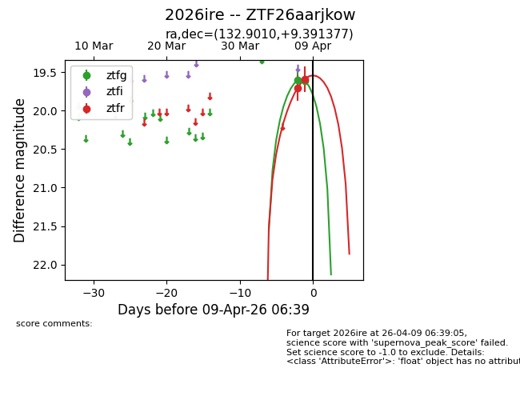
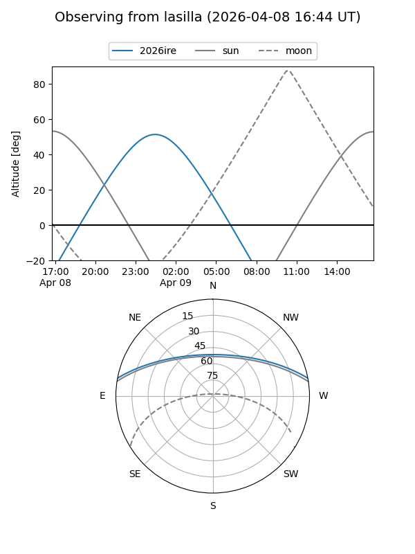
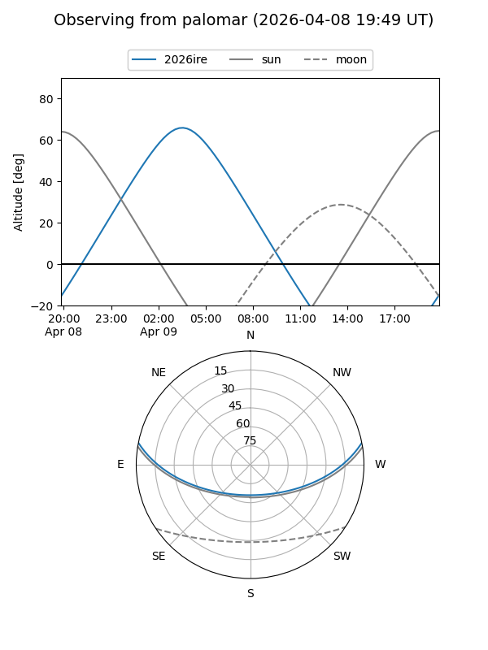
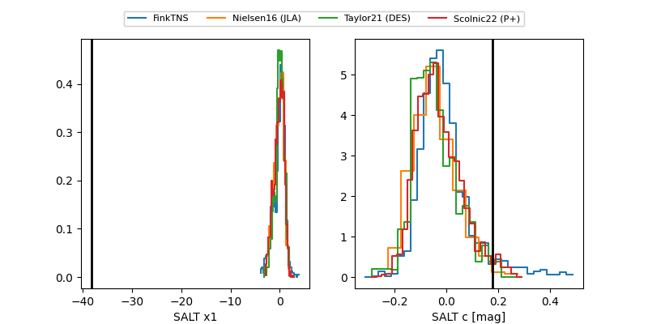

2026ire
Target 2026ire at 2026-04-09 06:43
Aliases and brokers:
FINK: link
Lasair: link
ALeRCE: link
TNS: link
YSE: link
alt names
ZTF26aarjkow (ztf,fink_ztf)
2026ire (tns,yse)
Coordinates:
equatorial (ra, dec) = 132.9010,+9.39138
equatorial (HMS+DMS) = 08:51:36.24,+09:23:28.96
galactic (l, b) = (218.2827,+30.92976)
Flags:
Photometry:
last ztfg=19.62, ztfr=19.59
2 ztfg, 2 ztfr detections
Lightcurve

Visibility


Additional plots
